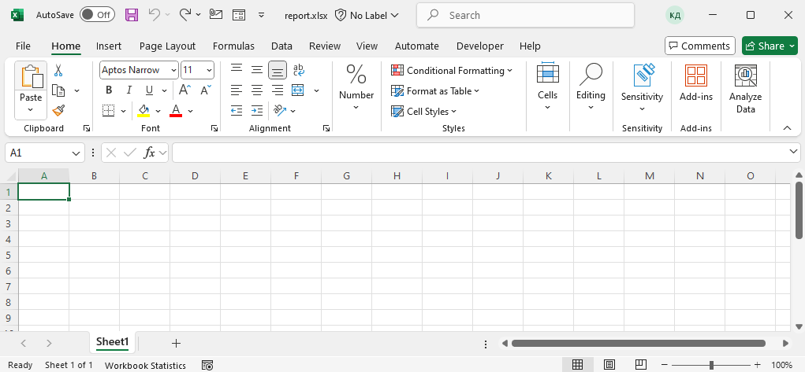
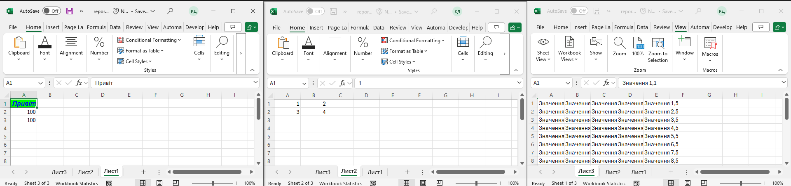
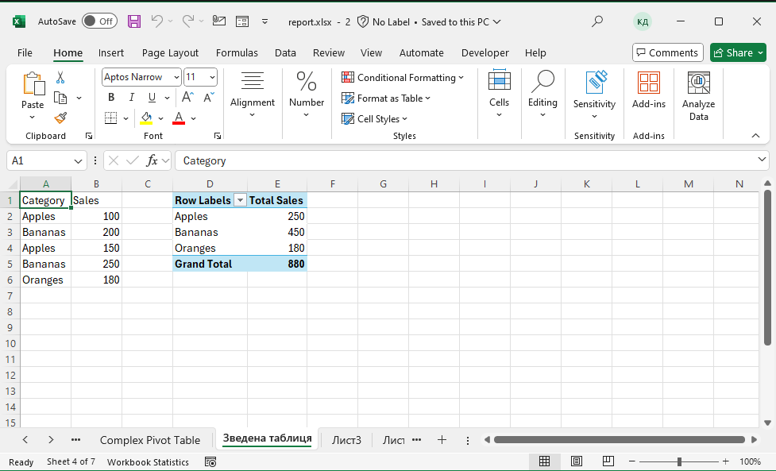
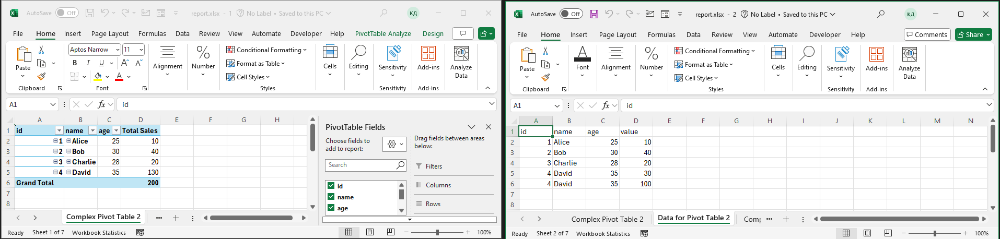

Автоматизація роботи з Excel за допомогою Python та win32com.client
1. Підготовка середовища
Для роботи з Excel через Python необхідно встановити бібліотеку pywin32:
Також слід переконатися, що встановлений Microsoft Excel.
2. Створення та редагування Excel-файлу
2.1 Перевірка існування файлу та його видалення
2.2 Створення, збереження файлу та закриття

Вигляд дефолтної книги
2.3 Додавання та перейменування аркушів
2.4 Встановлення активного аркуша
2.5 Перелік всіх аркушів
2.6 Видалення аркуша за ім'ям
2.7 Запис даних у клітинки

Результат запису даних
2.8 Форматування клітинок
3. Робота зі зведеними таблицями
3.1 Створення простої зведеної таблиці

Проста зведена таблиця
3.2 Створення складної зведеної таблиці

Складна зведена таблиця
3.3 Створення складної зведеної таблиці 2
Складна зведена таблиця 2